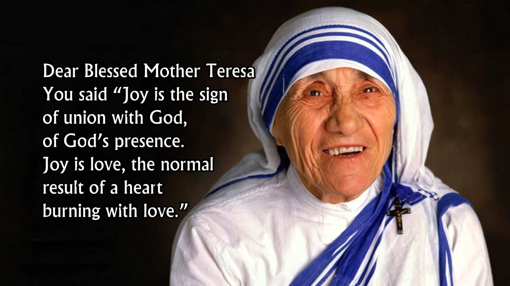

Mother Teresa
Peace begins with a smile.
Here's a time line of Mother Teresa's life:
-
1910 - Mother Teresa was born
Mother Teresa was born in Macedonia. She was named Agnes, and she later changed her name to Teresa.
-
1928 - Agnes becomes a nun
At the age of 18, Agnes decided to dedicate herself to God's work. She became a nun and changed her name to Teresa.
-
1931 - Sister Teresa becomes a teacher
Teresa was called Sister Teresa when she first began working at St. Mary's High School in Calcutta, India.
-
1937 - Sister Teresa is named Mother Teresa
She became Mother Teresa when she made her Profession of the Vows. She promised to be the "Spouse of Jesus for eternity".
-
1944 - She is promoted
In 1944 Mother Teresa became the principal of St. Mary's.
-
1948 - Mother Teresa moves on
After seeing the poor people on the streets outside of St. Mary's, Mother Teresa asked the church leaders if she could help them. She left the school so she could minister to the poor of Calcutta.
-
1957 - Mother Teresa opens an orphanage
Mother Teresa had a heart for the destitute, and especially for children. This led her to open her first orphanage in India.
-
1969 - Mother Teresa establishes Missionaries of Charities
Mother Teresa had a heart for the destitute, and especially for children. This led her to open her first orphanage in India.
-
1979 - She is awarded great honors
Mother Teresa was awarded many honors for her works, included the Nobel Peace Prize in 1979. Other awards were the Medal of Freedom and the Order of Merit from Queen Elizabeth.
-
1980 - Mother Teresa the home builder
Mother Teresa established homes for people who had no place to live. She used the donations of people from around the world to pay for the homes.
-
1985 - A center for AIDS
One of Mother Teresa's most notable works was the establishment of a center for people with AIDS.
-
1990 - Her reach expands around the world
Other missionaries flocked to work with Mother Teresa. Soon she had missionaries continuing her work in over 40 countries.
-
1997 - Mother Teresa's health declines
Mother Teresa continued her work even as she grew older and frail. By this time she had over 4000 workers in over 120 countries.
-
2003 - Mother Teresa is named a saint
Mother Teresa returned to Calcutta, India, for the last few weeks of her life. The world mourned for her when she passed.
-
1997 - Mother Teresa dies
Pope John Paul II began the process of Mother Teresa's beatification, which named her a saint. Her legend still lives, and she will forever be remembered for her acts of extreme love and kindness.
“She will continue to live on in the hearts of all those who have been touched by her selfless love.”
– Queen Elizabeth II, 1997